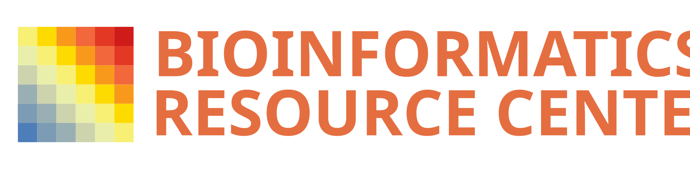

Responsible Use of AI for Non-Coders

Course Overview
This course introduces researchers who do not write code to the responsible use of AI tools such as ChatGPT and Claude. It covers what large language models (LLMs) are and how they work, what happens when you send them a query, where they help and where they fail, and how to fit them into your research safely: within Rockefeller data policy, with sensible guardrails, and with you as the final check on everything they produce.
No programming experience is required.
The course runs as a single half-day session:
| Time | Topic | Presenter |
|---|---|---|
| 15 mins | Rockefeller Data Policy | Anthony |
| 45 mins | Basics of LLMs | Claire |
| 45 mins | What Happens With a Query (+ exercise) | Tom |
| 15 mins | Break | |
| 20 mins | What AI Is Good and Bad At (+ exercise) | Matt |
| 50 mins | AI in Your Workflow | Matt |
| 30 mins | Customizing Your LLM (+ exercises) | Tom |
Course material and exercises are available to view as rendered HTML at https://rockefelleruniversity.github.io/responsible_use_of_AI_for_noncoders/. All material is available to download under GPL v2 license.
Course Integrity
This course is compiled automatically on 2026-10-29

The course is tested and available on MacOS, Windows and Ubuntu Linux for R version 4.6.1 (2026-06-24)

The course is also tested against every major R release since 3.5 (3.5 → 4.5) on Linux

Previous versions of this course are listed on the releases page.
Setting up
System Requirements
A Docker image is not configured for this course. Use the Manual Install tab.
Download the material
Clicking this link allows you to download all the course material including the code and slides. It also contains additional files we may use in the training.
The Presentations
Rockefeller Data Policy (15 mins, Anthony)
What data you are and are not allowed to put into AI tools at Rockefeller.
- HIPAA and other protected data
- Rockefeller data policy and approved AI tools
Links to presentations:
The html slide presentation can be found at this link Slide
The single page html presentation can be found at this link Single Page
The code use in the presentations can be found at Code
The notebook used to make the presentations can be found at Notebook
Basics of LLMs (45 mins, Claire)
What large language models (LLMs) are, how they are built, and how the tools you use fit together.
- How models are built and what they are trained to do — next-token prediction
- Current events: who builds and runs these models
- Journal policies on AI use — you are the final backstop
- Terminology: model vs. app (ChatGPT/Claude) vs. agent
- Exploring the interface: chat vs. code, effort, model selection
Links to presentations:
The html slide presentation can be found at this link Slide
The single page html presentation can be found at this link Single Page
The code use in the presentations can be found at Code
The notebook used to make the presentations can be found at Notebook
What Happens With a Query (45 mins, Tom)
What the model actually “sees” when you send a message.
- The context window
- Where context comes from beyond what you type (system prompts, memory, files, tools)
- Context compression in long conversations
- How context relates to tokens, cost and model choice
- Exercise: context and tokens
Links to presentations:
The html slide presentation can be found at this link Slide
The single page html presentation can be found at this link Single Page
The code use in the presentations can be found at Code
The notebook used to make the presentations can be found at Notebook
What AI Is Good and Bad At (20 mins, Matt)
Real-world examples of where AI helps and where it fails, tied back to how models work.
- Models are static — limited knowledge of recent news and brand-new tools
- Hallucinations — and why the model sounds so confident
- Exercise: provoke a hallucination
Links to presentations:
The html slide presentation can be found at this link Slide
The single page html presentation can be found at this link Single Page
The code use in the presentations can be found at Code
The notebook used to make the presentations can be found at Notebook
AI in Your Workflow (50 mins, Matt)
How to work with AI safely and effectively, even if you can’t read the code it writes.
- What a good workflow looks like
- Software environments and resource use
- Good practice still applies: clear instructions, working on subsets, checking results
- Hard lines: CLAUDE.md and other configuration files
- Controlling what the AI is allowed to do
Links to presentations:
The html slide presentation can be found at this link Slide
The single page html presentation can be found at this link Single Page
The code use in the presentations can be found at Code
The notebook used to make the presentations can be found at Notebook
Customizing Your LLM (30 mins, Tom)
Extending an AI assistant with your own instructions, skills and connections.
- Skills
- Connectors and plugins — an introduction to MCP
- Knowledge-based queries and where to learn more
- Exercises: CLAUDE.md before/after, invoking a skill, querying an MCP connector
Links to presentations:
The html slide presentation can be found at this link Slide
The single page html presentation can be found at this link Single Page
The code use in the presentations can be found at Code
The notebook used to make the presentations can be found at Notebook
Getting help
Course help
For advice, help and comments for the material covered in this course please contact us at the issues page associated to this course.
The link to the help pages can be found here
General Bioinformatics support
If you would like contact us about general bioinformatics advice, support or collaboration, please contact us the Bioinformatics Resource Center at brc@rockefeller.edu.